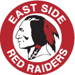

-
College
Boston University | Sept 2021 to Present

Pursuing a Bachelor of Science in Computer Science.
Key Coursework: Data Structures and Algorithms, Software Engineering, Web Development, Machine Learning.
Notable Achievements:- Developed PYCO, a social media platform where users organize clothing, request outfit suggestions, and engage with a fashion-focused community.
- Created a collaborative Notes App that allows users to share, like, and bookmark study notes, with features for organization and social interaction.
- Built a Battleship Game, a multiplayer strategic board game implementation, as part of a group project emphasizing problem-solving and game logic.
- Active e-board member of the Circle K International club focused on volunteering.
-
High School
East Side High School | Sept 2017 to June 2021
High School Diploma with Honors.
Key Achievements:- Graduated in the top 1% of the class.
- President of the Student Council.
- Participated in Junior Varsity Ice Hockey and Varsity Golf.
Notable Coursework:- Advanced Placement Computer Science
- Calculus AB/BC
- Physics